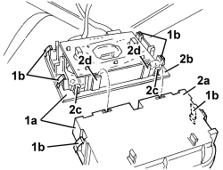

7040H33 GLASSES HOLDER (1) LH OR RH, ON ROOF TRIM - R R
- Path
- Procedures > 70 FITTINGS > 7040 BODY INTERIOR FITTINGS AND TRIM > 7040H ROOF PANEL AND PILLARS LINING > 7040H33 GLASSES HOLDER (1) LH OR RH, ON ROOF TRIM - R R
- Kind
- repair procedure (removal / refitting; the operation number is the code)
- Applies to
- all engines; all production periods
- Interactive page
- https://sloeber94.github.io/elrnDB/#/939004840
Applies to: all engines; all production periods
 Removing
Removing
 Refitting
Refitting1. Move the front courtesy light assembly and compartment (1a), releasing the retainers (1b).
2. Disconnect the compartment (2a) from the front courtesy light (2b) releasing the retainers (2c) and the attachments (2d).

Applies to: all engines; all production periods
Refitting
Removing- Check that the compartment is not damaged.
- Connect the compartment to the front courtesy light, engaging the attachments and the retainers.
- Position the front courtesy light assembly and compartment and attach the retainers.